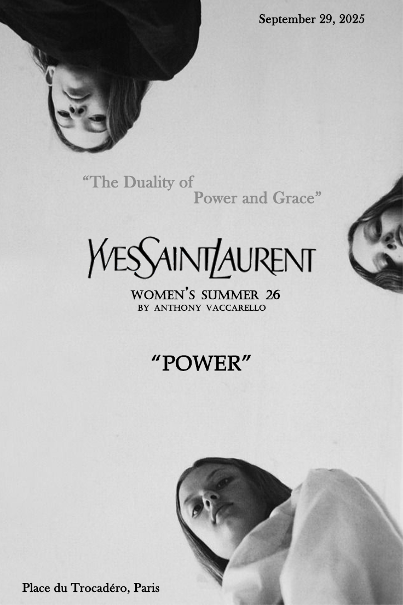
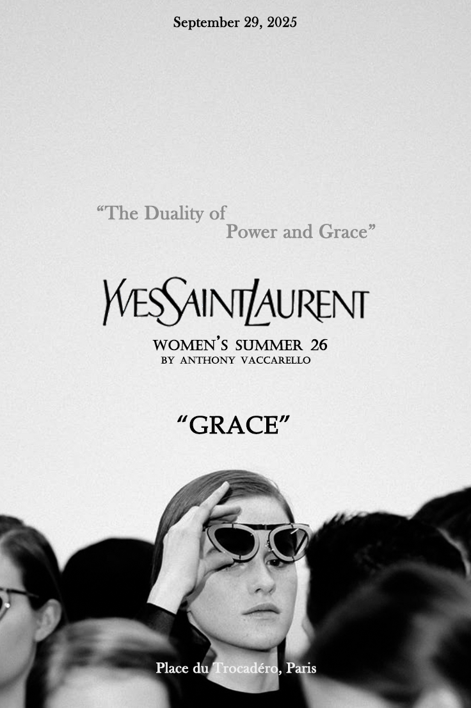

04 / Brand Campaign
本项目为 Yves Saint Laurent 2026 夏季女装系列的视觉创意与版式实验。设计核心源于品牌内核中“双重性（Duality）”的探讨，即力量（Power）与优雅（Grace）之间的张力平衡。视觉表达上，我采用了极简的高反差黑白摄影，建立了一套严格的对称式版式系统。在《POWER》篇章中，通过倒置的构图打破常规视域，传达一种柔软却不可动摇的内在生命力；而在《GRACE》篇章中，则通过模特深邃的目光与群像的层次，建立经典的法式优雅。
交互思考：在作品集的呈现上，我刻意采用了并置的对称结构，并加入了微动态悬浮交互（Hover Effect）。这种设计不仅是为了方便用户直观比较两者的画面语言，更是为了在数字化媒介中重塑平面海报的“重量感”，让观众在鼠标悬停的瞬间，感知到视觉背后那种“流动的优雅”。

